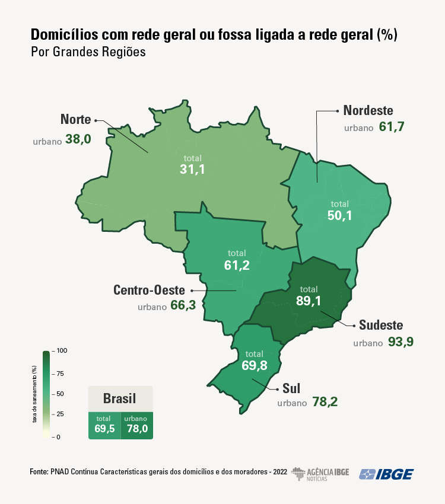

Relate, Contribua, Transforme.
Seja parte da mudança: Junte-se a nós na melhoria do abastecimento de água e saneamento em sua comunidade. Relate problemas em tempo real, contribua para soluções eficazes e transforme positivamente o ambiente ao seu redor.
ExplorarÁgua Potável e Saneamento
Seja parte da mudança: Junte-se a nós na melhoria do abastecimento de água e saneamento em sua comunidade. Relate problemas em tempo real, contribua para soluções eficazes e transforme positivamente o ambiente ao seu redor.
Relatórios
"Sistema BI especializado em denúncias do ODS 6, oferecendo análises precisas para garantir a gestão sustentável de água e saneamento."
Geolocalização
“Integração de geolocalização permite identificar com precisão o local da denúncia, facilitando a ação rápida e efetiva.”
Denúncias
“Usuários podem reportar violações relacionadas à ODS 6, como má qualidade da água, falta de saneamento, e práticas prejudiciais ao meio ambiente.”